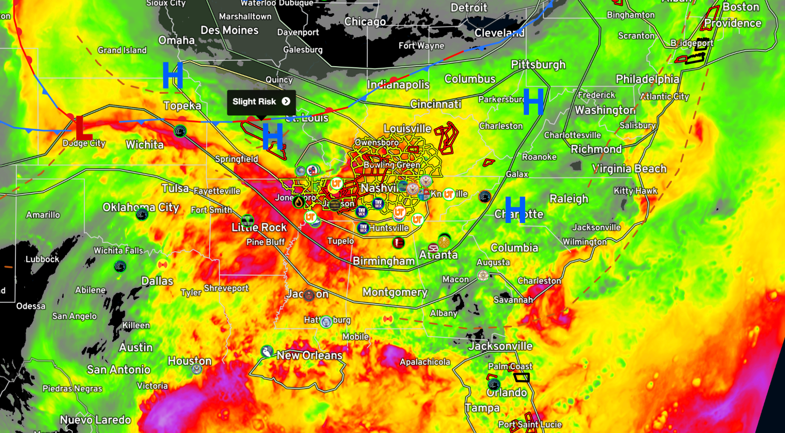
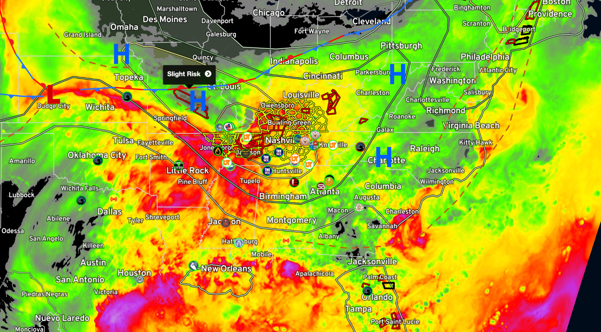
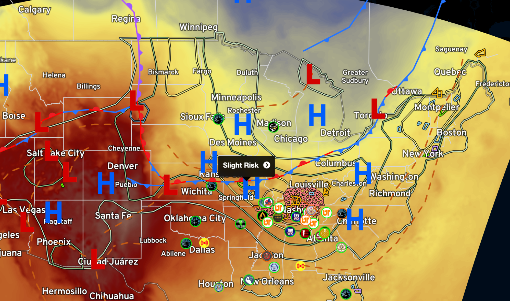
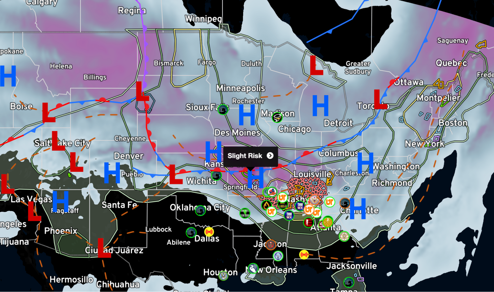
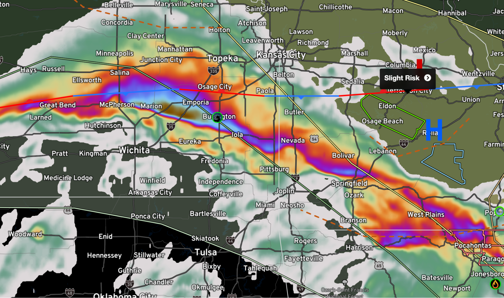
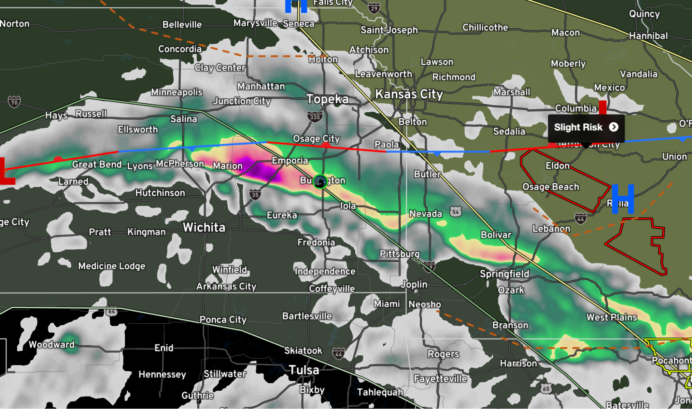
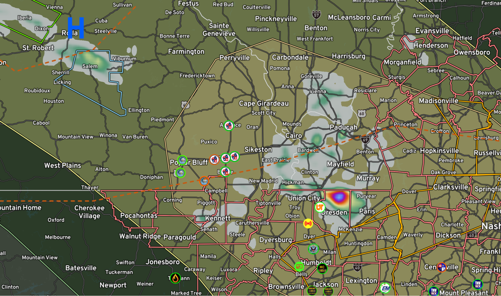
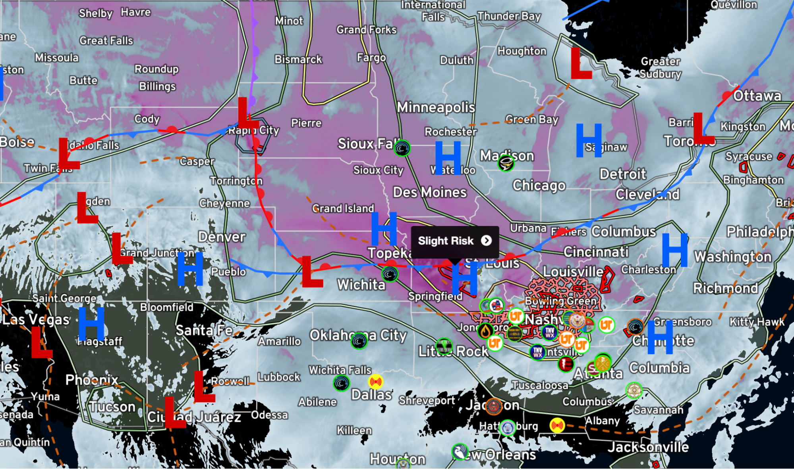

Now switching to satellite and model data,
Surface-based CAPE (Convective Available Potential Energy) and Most Unstable CAPE (MUCAPE) are measures used in meteorology to assess the potential for atmospheric instability and the intensity of convective storms. Here's an explanation of both terms:
- Surface-based CAPE: Surface-based CAPE represents the amount of energy available for convection originating near the Earth's surface. It quantifies the potential buoyant energy in an air parcel lifted from the surface to a level of free convection (LFC), where the parcel becomes warmer and less dense than its surroundings. Surface-based CAPE considers the temperature and moisture conditions at the surface and represents the instability at low levels of the atmosphere. Higher values of surface-based CAPE indicate greater potential for convection and more vigorous storm development.

- Most Unstable CAPE: Most Unstable CAPE (MUCAPE) is a measure of the maximum potential instability in the atmosphere when considering the most buoyant air parcels at different levels. It is calculated by determining the air parcel that, when lifted, would have the highest CAPE value throughout the vertical column of the atmosphere. MUCAPE takes into account the temperature and moisture profile at various levels and identifies the parcel that would experience the most significant buoyancy and produce the most intense convection. MUCAPE values are often higher than surface-based CAPE values since they represent the maximum instability achievable in the atmosphere.

Both surface-based CAPE and most unstable CAPE are important parameters for understanding the potential for thunderstorm development, convective activity, and the severity of severe weather events. Higher values of CAPE indicate greater instability and can be indicative of conditions favorable for strong updrafts, severe thunderstorms, and the potential for severe weather phenomena like large hail, damaging winds, and tornadoes. However, it's important to note that CAPE alone is not sufficient for predicting severe weather, and other atmospheric conditions and parameters must also be considered in forecasting and severe weather analysis.
- 700mb Temperature and 850mb Temperature: These terms refer to the temperature measurements at specific atmospheric pressure levels. The "mb" stands for millibars, which is a unit of pressure. The 700mb temperature represents the temperature at the 700 millibar pressure level, and the 850mb temperature represents the temperature at the 850 millibar pressure level. These temperature values are often used to assess the stability and moisture content of the atmosphere at those specific levels. Lower temperatures at these pressure levels indicate cooler air masses, while higher temperatures suggest warmer air masses.

- 500mb, 700mb, and 850mb Wind: These terms indicate the wind measurements at different atmospheric pressure levels. Similar to the temperature measurements, the numbers 500mb, 700mb, and 850mb represent the pressure levels at which the wind is observed. The wind direction and speed at these levels provide important information about the horizontal airflow patterns in the atmosphere. Analyzing the wind at different pressure levels helps meteorologists understand the dynamics of weather systems, such as the movement and intensity of storms.

- EHI (Energy-Helicity Index) 0-1 and 0-3 AGL: The EHI 0-1 and EHI 0-3 AGL refer to the Energy-Helicity Index calculated within specific height intervals above ground level (AGL). These indices combine the convective available potential energy (CAPE) and storm-relative helicity (SRH) within the defined height intervals. The EHI values help assess the potential for severe weather, particularly tornado development, within those height ranges. Higher EHI values indicate an environment more favorable for the development of tornadoes.

- Supercell Composite: The Supercell Composite is a meteorological index that combines several atmospheric variables to identify the potential for supercell thunderstorms. It takes into account parameters such as surface-based CAPE, storm-relative helicity, and the vertical wind shear. The Supercell Composite is used as a tool to identify the likelihood of supercell thunderstorm formation, which are severe storms known for their rotating updrafts and potential to produce tornadoes.

- Max Updraft Helicity: Max Updraft Helicity represents the maximum amount of helicity within an updraft region of a thunderstorm. Helicity measures the rotation and turning of the wind with height, which is important for the development of rotating updrafts that can produce severe weather. Max Updraft Helicity is often used as an indicator of the potential for organized, rotating storms and the risk of tornado formation.

- Bulk shear, also known as wind shear, refers to the change in wind speed and direction with height in the atmosphere. It is a crucial meteorological parameter used to assess the potential for severe weather, particularly the organization and intensity of thunderstorms.Bulk shear is typically measured between two different atmospheric levels, such as between the surface and a higher altitude. The difference in wind speed and direction over this vertical distance provides information about the vertical wind shear, which plays a key role in the development and maintenance of severe storms.
